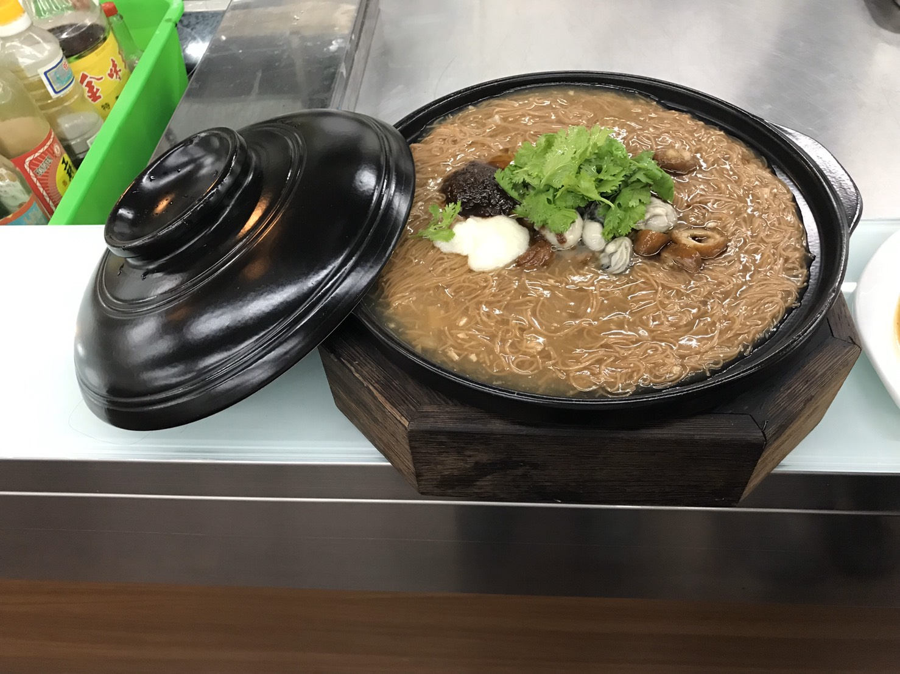

台灣料理
菜名:大腸麵線
材料:
大腸 200g
蚵仔 100g
香菜 10g
蒜泥 10g
紅麵線 200g
蒜頭酥 1.5大匙
油蔥酥 1.5大匙
調味:
鰹魚粉 1大匙
糖 1.5大匙
胡椒粉 1.5匙
蔭油 2大匙
高湯 1000g
烏醋 2.5大匙
太白粉 5大匙
香油 2大匙
滷大腸滷汁(小火煮10分)
香葉 4片
草果 2粒
醬油 46g
冰糖 35g
味精 11g
米酒 10g

做法：
1.先裝8分滿的水汆燙紅麵線40分。
2.陰油、胡椒粉、油蔥酥、蒜頭酥→放下去煮。
3.紅麵線下→太白粉水水滾後關小火勾芡。
4.汆燙蚵仔。
5,起鍋→擺盤蚵仔1匙、沙茶2匙、香菜放在上面裝飾即可。
滷大腸滷汁：
香葉、草果、醬油、冰糖、味精、米酒→熬煮1小時40分。
回首頁
中餐料理篇
異國料理篇
網際網路應用心得